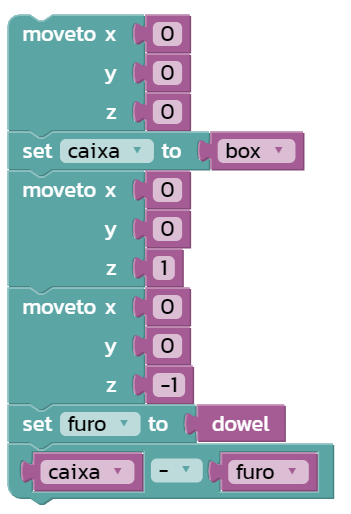

No Madeup, temos a opção de realizar subtrações de objetos para fazermos objetos mais complexos. Para se fazer isso basta criar uma variável para cada objeto e depois fazer uma subtração com ambos. No exemplo abaixo, é feito um arco, usando uma parede e subtraindo o arco desejado da mesma.
